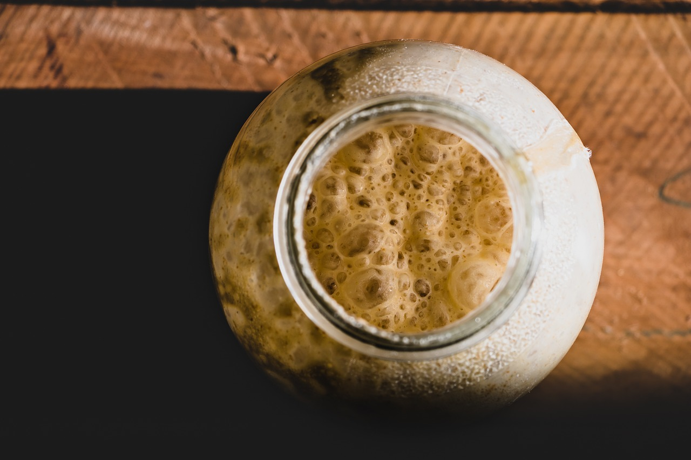
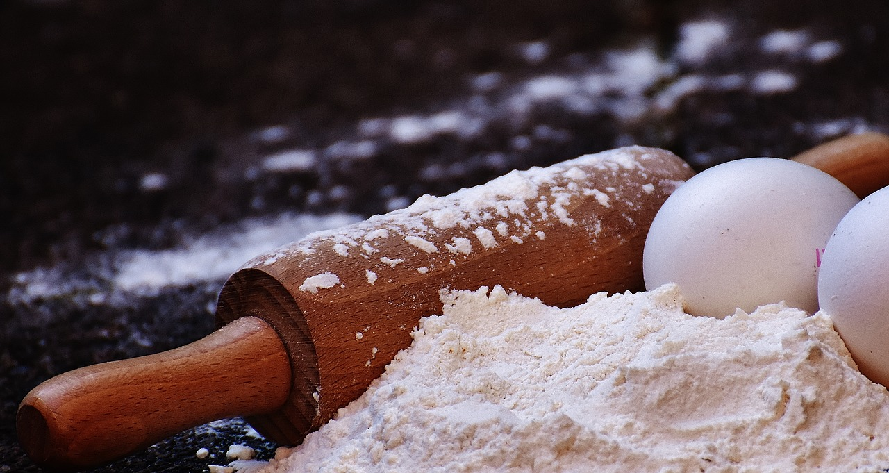
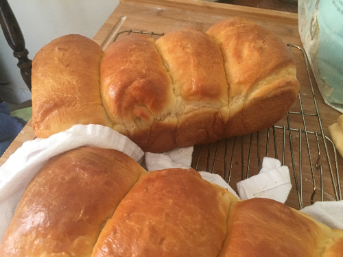
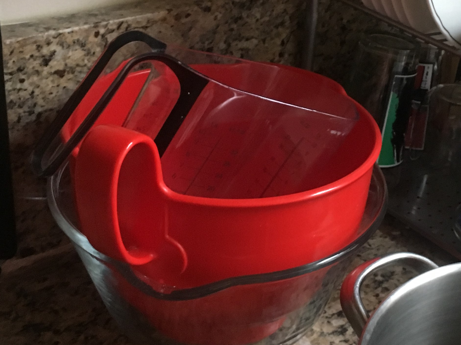

Bread for Friends
Date: April 2, 2019

We love our friends, we really do. And sometimes we show that love via crafts.
Sometimes they're not very good. Sometimes we are late in making things or complete forget you promised something away
It happens, and I'm glad my hobby is one that only takes a day or two to make and is mostly passive.
Imagine if I got into sewing instead? I'd make one pillow and quit. But bread making is expediant
My only minor major gripe about making things for friends isn't about them. It's about me.
I need to know how it tastes. Rather, it's about the crumb. Not the way it crumbles, but the crumb. It's the way the bread looks on the inside
Is it too wet? Are there too many air holes, etc.
Of course I won't know until the bread is cut. So I send texts:
So if you ever get a text from me asking "How's the bread?", I'm not seeking validation. I just gotta know about that crumb.
If you really want to be my bread buddy, send a picture back.
Sour Dough Starter
Date: March 15, 2019

Sourdough is one of the most rewarding bakes for patient bakers who like to nurture. Unfortunately I'm not very nurturing and every sourdough start I've tried has been a non-starter. But, hey, third time's a charm, right?
Made from a culture of wild yeasts, sourdough starters are unique and giving, as long as you are patient. The culture of wild yeasts is called a Mother Starter and is nurtured over several days.
I've attempted to make a starter before, but sadly lost it several days in when I forgot to stir the culture (RIP).
Rolling Dough
Date: March 14, 2019

Rolling Dough can be a pain, let's be real here. If you've got some wet dough, some partially incorporated dough or just not enough flour, your dough will cling to your pin like a middle school sweetheart. I know that chilling the dough helps with rolling out, but as we saw with the milk bread, it does lead to a difference in proofing.
So, as much as I've argued against it, I've been thinking about non-traditional rolling pins, like the ones made out of marble or without handles.
Luckily I did not have to look far to get the information I needed, thanks to Joy the Baker's article Baking 101: Which Rolling Pin is Best?
Apparently old school and French pins are handles optional to give you more control with rolling. I can see the benefit with pizzas, which taste best with an even thin crust (don't @ me Chicago Style pizza lovers).
Marble pins stay relatively cool to allow you to roll out laminated doughs. They are expensive ($$$) though, but worth it if you like to make phyllo dough or croissants.
Not all of us have extra dough to spend on rolling pins. So, here are some tips for working with a stubborn rolling pin:
- Dust your rolling surface in flour before you place your dough down.
A light dusting can help the dough from sticking to your surface, requiring you to scrap it off. It will also help you handle the dough, as the flour keeps it from sticking to both hands and the surface you're working it on. Be careful not to use too much or you'll get a dry texture on the outside of your bread, or if kneading, pockets of flour inside your bread. Yuck.
- Dust your rolling pin in flour before you roll your dough out.
You've dusted your rolling surface and immediately went to town rolling it out, only to find out it clings to your pin like a shy two year old at another kid's birthday party. Why? Your dough is wet and wants to cling to surfaces, and since the rolling surface isn't an option, it'll hang around the rolling pin. Dusting your rolling pin in some flour will help you exert pressure enough to roll it flat without covering your pin.
- Keep your dough chill, if possible.
Some breads are made the day off, but if you're like me and try to plan ahead
Hokkaido Milk Bread
Date: March 14, 2019

These are the Hokkaido Milk breads I made. They're very soft and fluffy thanks to a starter technique called tangzhong. Before mixing the dry ingredients, the tangzhong technique has you make a thick creamy roux with flour and water, which you then add to the dough after it cools to room temperature.
I've made milk loaves before, but not four like I did this time, so I was pretty nervous. The recipe I used from Food52, available in the Recipes section required 2.5 cups of flour per loaf, which altogether meant 9 cups of flour. I was lucky to be able to incorporate everything into my big red bowl.

If you have never made a tangzhong loaf before, don't be intimidated. The biggest difference is preparing the starter and rolling the dough. The the proofing of the bread is very much the same.
Just separate your dough into four sections, roll out each one into a long oval. Fold your ovals in thirds width-wise then rolls it out (again). Now we have even dough through out our oval. Roll that oval up like a cinnamon roll.
Do the same for all 4 ovals and put the rolls you just made one after the other into the loaf pan and let it rise in warm spot.
This bread pairs well with honeyed ham and swiss chesse. Enjoy!
Check out more Hokkaido Bread pics, including part of the prep here in the Bread Gallery!